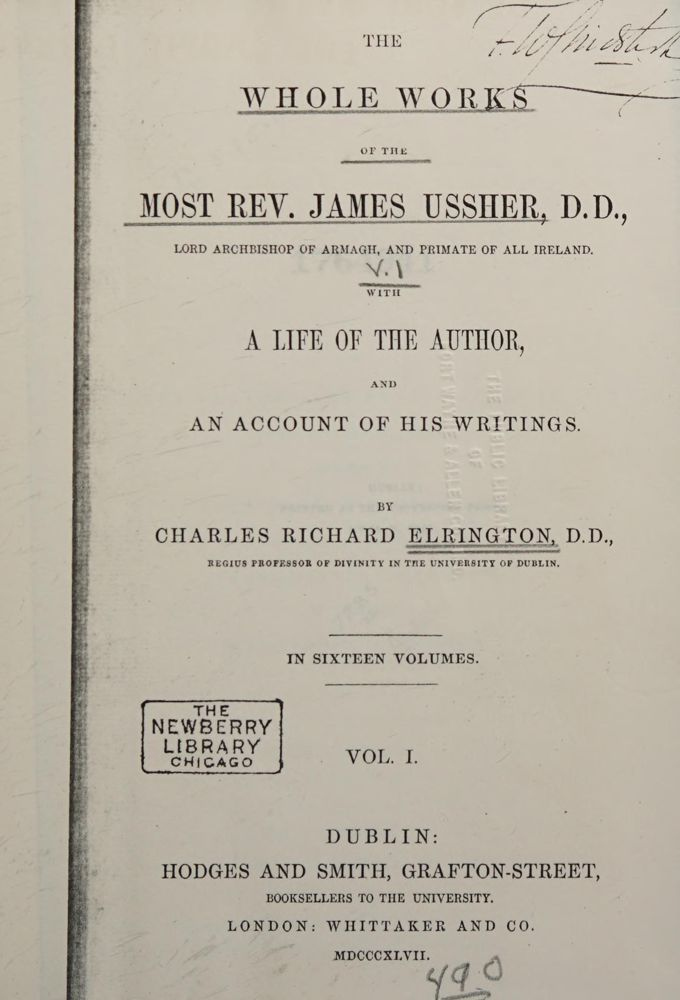
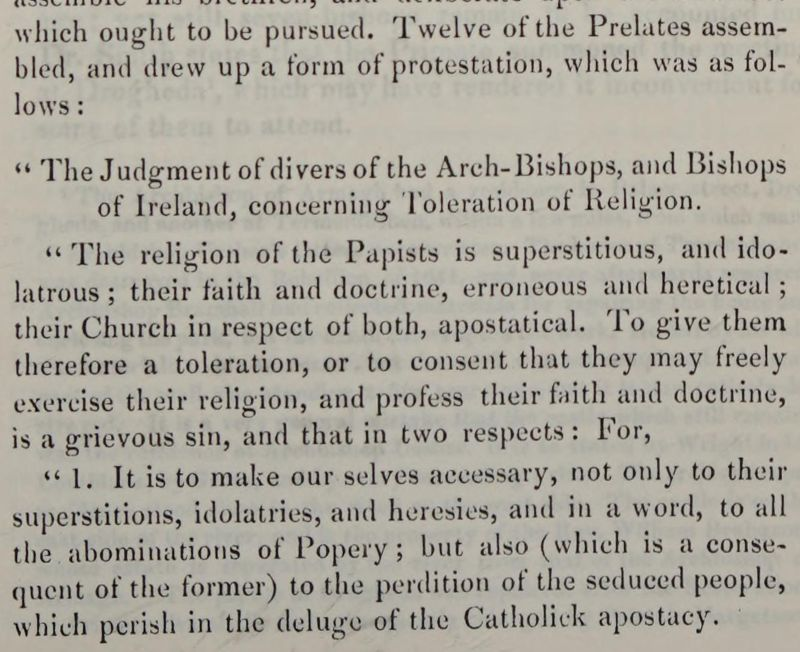
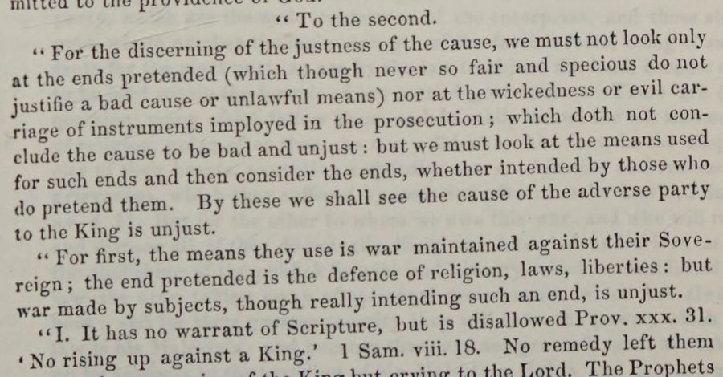

“The Judgment of divers of the Arch-Bishops, and Bishops of Ireland, concerning Toleration of Religion” (p. 73)
English: Dublin 1847, vol. I, p. 73, scan n160. Highlighted: Lecky’s quotation.

… which ought to be pursued. Twelve of the Prelates assembled, and drew up a form of protestation, which was as follows:
“The Judgment of divers of the Arch-Bishops, and Bishops of Ireland, concerning Toleration of Religion.
“The religion of the Papists is superstitious, and idolatrous; their faith and doctrine, erroneous and heretical; their Church in respect of both, apostatical. To give them therefore a toleration, or to consent that they may freely exercise their religion, and profess their faith and doctrine, is a grievous sin, and that in two respects: For,
“1. It is to make our selves accessary, not only to their superstitions, idolatries, and heresies, and in a word, to all the abominations of Popery; but also (which is a consequent of the former) to the perdition of the seduced people, which perish in the deluge of the Catholick apostacy. …

| Elrington (1847, p. 73) | Lecky (vol. II, ch. IV, text at note 47) |
|---|---|
| Twelve of the Prelates assembled | nearly all the Irish Protestant bishops, under the presidency of Usher, assembled |
| The religion of the Papists is superstitious, and idolatrous; | The religion of Papists is superstitious, |
| their faith and doctrine, erroneous and heretical; | their faith and doctrine erroneous and heretical; |
| is a grievous sin, and that in two respects | is a grievous sin. |
The words are Elrington’s print of the bishops’ judgment, with “and idolatrous” silently dropped. Lecky’s “nearly all the Irish Protestant bishops” is his own estimate; Elrington says twelve assembled, and the judgment itself speaks only of “divers” archbishops and bishops.
“War made by subjects, though really intending such an end, is unjust” (p. 239)
English: Dublin 1847, vol. I, p. 239, scan n492: Ussher’s answers, preserved by Dr. Parr, to questions put to him in the Civil War about the duty of subjects. Highlighted: the doctrine Lecky refers to.

“To the second. “For the discerning of the justness of the cause, we must not look only at the ends pretended (which though never so fair and specious do not justifie a bad cause or unlawful means) nor at the wickedness or evil carriage of instruments imployed in the prosecution; which doth not conclude the cause to be bad and unjust: but we must look at the means used for such ends and then consider the ends, whether intended by those who do pretend them. By these we shall see the cause of the adverse party to the King is unjust.
“For first, the means they use is war maintained against their Sovereign; the end pretended is the defence of religion, laws, liberties: but war made by subjects, though really intending such an end, is unjust.
“I. It has no warrant of Scripture, but is disallowed Prov. xxx. 31. ‘No rising up against a King.’ 1 Sam. viii. 18. …
Lecky (vol. II, ch. V, note 89), after citing Jeremy Taylor on passive obedience: “Ussher, who was perhaps still more competent than Taylor to express the sentiments of the Fathers, was at least equally emphatic. See Elrington’s Life of Ussher, vol. i. p. 239.” The page bears him out: even a war genuinely meant to defend religion and liberty is unjust if subjects make it against their king. Ussher argues here from Scripture, not from the Fathers.
Further down the rabbit hole
Sources that Lecky cites in the notes next to the ones that cite this page.
- Hallam, Literature of Europe and Constitutional HistoryHow Lecky quotes Hallam on persecution
- Macaulay, History of England and EssaysMacaulay on Puritans, bear-baiting and the servile Church
- Buckle, History of Civilization in EnglandWeather and credulity, and the Scottish clergy’s Devil who had been studying for five thousand years
- Allen, Inquiry into the Rise and Growth of the Royal PrerogativeAn oath of non-resistance that outlived the Revolution by some thirty years
- Neal, The History of the PuritansA boy king signs a death warrant in tears, and the Presbyterians’ heresy law of 1648
- Hooker, Of the Laws of Ecclesiastical PolityLaws without consent are “no better than mere tyranny”, and what Hooker meant by consent


Backlinks
Every place in Rationalism in Europe that links to this page (generated automatically when the site is built).